- 問題ID : 15446 インターネットプロトコルの基礎
- 履歴
192.168.0.128/25で使用可能なIPアドレスの数を書きなさい。
正解
126
解説
サブネットマスクが/25という事は、ネットワークアドレス部に25ビット使用しています。IPアドレスの全体長は32ビットですので、ホスト部に使用できるのは32-25の7ビットです。
7ビットで表せる数は、2の7乗=128（0〜127）となります。
このうち、ネットワークアドレスと、ブロードキャストアドレスを引いた128-2=126（個）が正解となります。
よって正解は
・126
です。
その他の選択肢は、計算結果が正しくありません。
なお、このようなIPアドレスのクラスの概念を使わずに、任意の長さのサブネットマスクを利用する事を「CIDR」（サイダー）と言います。
参考
【2進数と10進数】
数値の表記方法には「2進数」や「10進数」といった種類があります。
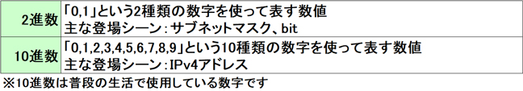
「0～17」をそれぞれの方法で表記すると以下のようになります。
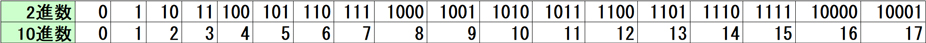
[進数の考え方]
進数は「その数になったら次の位に繰り上がる」と考えるとわかりやすくなります。
例えば、2進数では「1」の次の数は「2」なので次の位に繰り上がり「10」となります。
10進数では「9」の次の数は「10」なので次の位（十の位）に繰り上がり「10」となります。
【10進数と2進数の変換方法】
さまざまな変換方法がありますが、ここでは簡単に以下の変換表を使います。
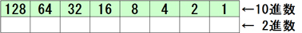
■2進数から10進数への変換
変換したい2進数の数値を変換表に入れて、「1」が入った部分を全て足します。（表には右詰めで入れます）
足した合計が10進数の数値になります。
例） 2進数の「10111」を10進数に変換する
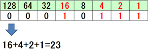
答） 23
■10進数から2進数への変換
変換したい10進数の数値を変換表の大きい方から引いていき、引いた部分に「1」を入れます。
数値が0になるまで引いたときに、変換表に入っている「0」と「1」の並びが2進数の数値になります。
例） 10進数の「23」を2進数に変換する
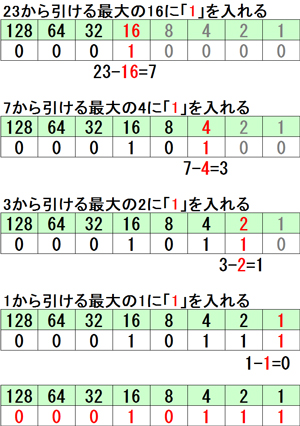
答） 10111
【サブネット計算】
サブネット（ホスト部からビットを借用して作られたネットワーク）に関する以下の情報は、提示されたIPアドレスから算出します。
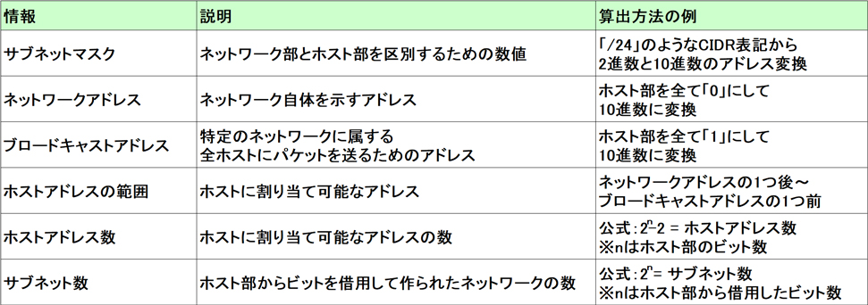
※前提知識
各クラスは以下のようにアドレスの範囲と、ネットワーク部とホスト部の境界線が決められています。IPアドレスを8ビットごとに区切ったまとまりのことを「オクテット」と言います。
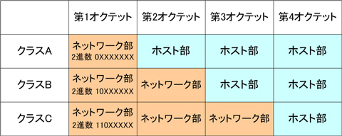
クラスAは第1オクテット（8ビット）までがネットワーク部なので「/8」となります。
クラスBは第2オクテット（16ビット）までがネットワーク部なので「/16」となります。
クラスCは第3オクテット（24ビット）までがネットワーク部なので「/24」となります。
なお、このようなIPアドレスのクラスの概念を使わずに、任意の長さのサブネットマスクを利用する事を「CIDR」（サイダー）と言います。
【算出例】
例として「192.168.1.122/27」というIPアドレスから、それぞれを算出してみます。
■サブネットマスクの算出
サブネットマスクの表記方法はCIDR表記、2進数表記、10進数表記があり、要件に応じてそれぞれを算出します。
例の「/27」（CIDR表記）は、先頭から27ビットが「1」であることを示しています。
つまり、2進数表記では「11111111.11111111.11111111.11100000」となります。
2進数から10進数へ変換すると10進数表記の「255.255.255.224」となります。
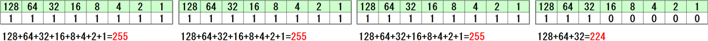
■ネットワークアドレスとブロードキャストアドレスとホストアドレスの範囲の算出
まずは、ネットワーク部とホスト部を確認するために「192.168.1.122/27」を2進数に変換します。
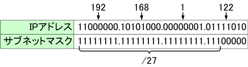
サブネットマスクが「1」の部分がネットワーク部になり、「0」の部分がホスト部になります。
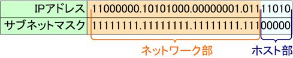
ネットワークアドレスは、ホスト部が2進数で全て「0」になるアドレスなので「192.168.1.96」になります。
ブロードキャストアドレスはホスト部が2進数で全て「1」になるアドレスなので「192.168.1.127」になります。
ホストアドレスの範囲は、ネットワークアドレスの1つ後～ブロードキャストアドレスの1つ前までの範囲なので「192.168.1.97～126」になります。
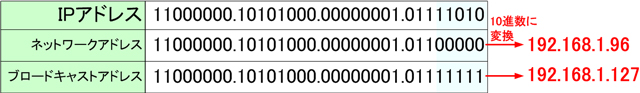
■ホストアドレス数の算出
「192.168.1.96/27」のネットワークで使えるホストアドレスの範囲は上述の通り「192.168.1.97～126」なのでホストアドレスの数は「30」になります。
公式を使った計算方法：
ホスト部のビット数が「5」なので
2の5乗＝32
32-2＝30（ネットワークアドレスとブロードキャストアドレスはホストアドレスとして使用できないので-2する必要があります）
ホストアドレス数は「30」
■サブネット数の算出
「192.x.x.x」はクラスC「/24」に該当します。つまり「192.168.1.x/27」は、ホスト部からネットワーク部に3ビット借用してサブネットを作成していることになります。
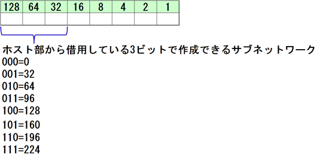
「192.168.1.x/27」 で作成できるサブネットワークは「192.168.1.0/27」「192.168.1.32/27」「192.168.1.64/27」 「192.168.1.96/27」「192.168.1.128/27」「192.168.1.160/27」「192.168.1.192/27」 「192.168.1.224/27」の8つになります。
公式を使った計算方法：
ホスト部から借用しているビット数が「3」なので
2の3乗＝8
サブネット数は「8」になります。